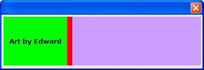
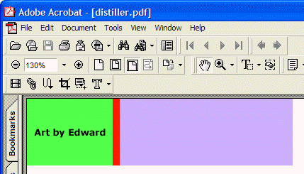

Displaying and Printing Bitmaps
Xbasic offers a large number of functions that will create, draw, display, and print bitmaps.
The General Process
The general process when working with bitmaps is to:
Optionally, read graphical data into a blob variable.
Create a bitmap in memory, either from graphical data or by using various drawing functions.
Optionally, modify the bitmap with various drawing functions.
Optionally, save the bitmap.
Display the bitmap on a form or Xdialog, or
Send the bitmap to a printer.
Reading Graphical Data
As the following example shows, it is easy to read binary data into a blob variable with the FILE.TO_BLOB() method.
|
dim png_data as B png_data = file.to_blob("c:\documents\Xbasic Reference\Images\toucan.png") |
Creating a Bitmap in Memory
One way to create a bitmap is to use the UI_BITMAP_LOAD() function to extract graphical data from a blob variable. This example creates a bitmap in memory named "test1". This bitmap is implicitly sized by its content data.
|
ui_bitmap_load("test1", png_data) |
Another way to create is bitmap is to use the UI_BITMAP_CREATE() function to create a blank "slate" of a particular size. This example creates a bitmap in memory named "test2" that is 4 inches wide and 1 inch high.
|
ui_bitmap_create("test2", 4, 1) |
Or you might grab a piece of the screen image with the UI_BITMAP_CREATE_FROM_SCREEN() function. The following example captured a 4 by 2 inch rectangle from the upper left corner of the screen.
|
ui_bitmap_create_from_screen("test3", 0, 0, 4, 2) |
Modifying and Displaying the Bitmap
The are a large number of Graphic Functions that you may use to modify the bitmap image. These functions are embedded into the Code section of the UI_BITMAP_DRAW() function.

|
ui_bitmap_create("test", 4, 1) ui_bitmap_draw("test",<<%code% set_font("Verdana,10,b", "black", "green") set_brush("green") inner_Rect(0, 0, 1.3, 1) set_brush("red") inner_Rect(1.3, 0, .1, 1) set_brush("Lavendar") inner_Rect(1.4, 0, 2.6, 1) text("Art by Edward", .65, .5, "center") %code%) ui_dlg_box("", "{image=test}") ui_bitmap_drop("test") |
Printing the Bitmap
If you were going to print this lovely image, the code would look like this. First, dim the variables and define the bitmap in a variable named page_description, which contains the same Code section included in the UI_BITMAP_DRAW() function.
|
dim page_description as C dim program_name as C dim printer as C page_description = <<%code% set_font("Verdana,10,b", "black", "green") set_brush("green") inner_Rect(0, 0, 1.3, 1) set_brush("red") inner_Rect(1.3, 0, .1, 1) set_brush("Lavendar") inner_Rect(1.4, 0, 2.6, 1) text("Art by Edward", .65, .5, "center") %code% |
Now, print the bitmap using the UI_PRINTER_DRAW() function:

|
printer = "Acrobat Distiller" program_name = "C:\Program Files\Adobe\Acrobat 5.0\Distillr\AcroDist.exe" ui_printer_draw(printer, "please wait", "c:\distiller.ps", page_description) if (file.exists("c:\distiller.pdf")) then file.remove("c:\distiller.pdf") end if cmd = program_name + " c:\distiller.ps" sys_shell(cmd) wait_until(file.exists("c:\distiller.pdf"), 1, 10) |
Saving a Bitmap
The following example creates and saves this picture to a file.
|
dim pretty_picture as B dim ptr as P ui_bitmap_create("test", 4, 1) ui_bitmap_draw("test",<<%code% set_font("Verdana,10,b", "black", "green") set_brush("green") inner_Rect(0, 0, 1.3, 1) set_brush("red") inner_Rect(1.3, 0, .1, 1) set_brush("Lavendar") inner_Rect(1.4, 0, 2.6, 1) text("Art by Edward", .65, .5, "center") %code%) pretty_picture = ui_bitmap_save("test") ptr = file.create("c:\pretty_picture.bmp", FILE_RW_EXCLUSIVE) ptr.writeb(pretty_picture) ptr.close() ui_bitmap_drop("test") |
Interactive Window
These functions may be tested in the Interactive window. For example:
|
' turn on graphics mode mode graphics ' draw a rectangle fill_rect(1, .5, 3, 2) ' draw a line line(1.1, 2, 2, 2.5) ' turn off graphics mode mode text |
See Also
Bitmap and Graphic Functions, FILE.CREATE(), <FILE>.WRITEB()